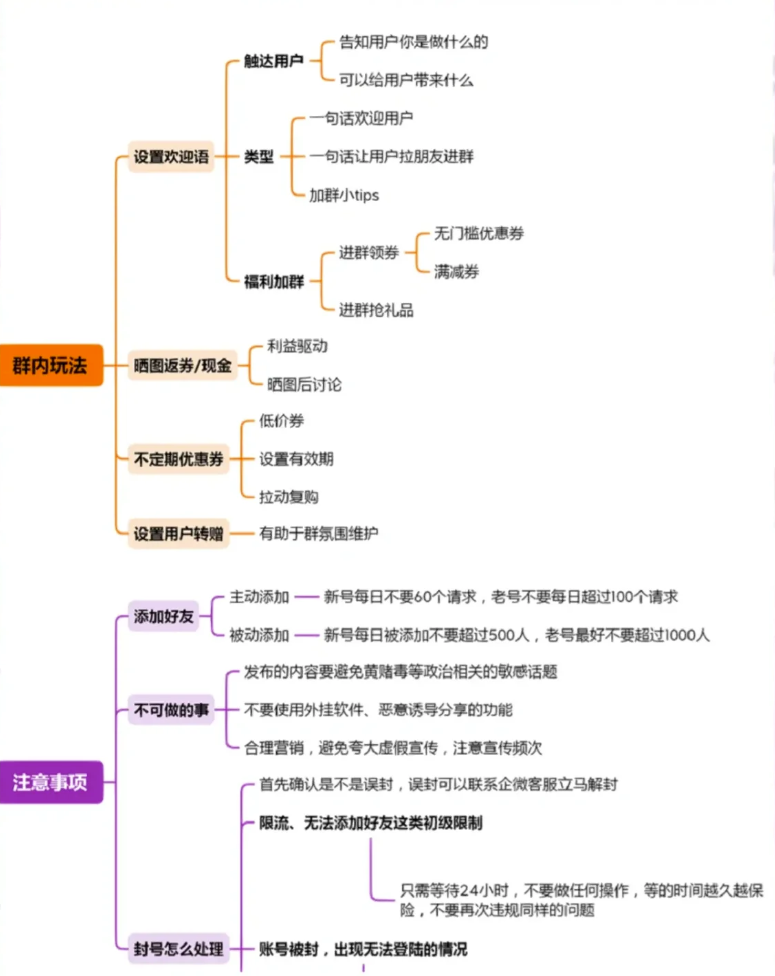

Created by 弓力超, last modified on 2023-02-24
企微相关
企微官方常用文档地址：
- 企业微信常用功能解答，功能的最新口径基本都在这里 帮助中心-企业微信 (qq.com)
- 企业微信的官方API和接口都在这个页面 文档 - 企业微信开发者中心 (qq.com)
- 开发过程中遇到的问题，可搜索，官方提问社区 开发者社区 - 企业微信开发者中心 (qq.com)
企微基础知识：

平台常用场景和相关问题的汇总：
| 场景 | 功能 | 部门 | 需注意事项（小二和产品） | 当前不完善的点 |
|---|
小二入职离职 | 企微账号管理（增删改查） | 奶粉电销团队 微商线上运营团队 MC团队 | - 已关闭邀请机制，只能管理员人工添加。避免外部人员混进来。
- 入职离职流程的sop中对于企微账号的管理较弱，管理员需要定期浏览和删除一些已经离职的人。
| - 由于已经有钉钉，企微无法通过系统管理组织架构，需要人工管理。
|
| 企微实名认证 | 企微实名认证 | 同上 | - 需要完整知晓实名认证的逻辑 企业微信如何实名认证？
| - 部分企微账号会被继承使用，导致接手人和企微实名人员不一致。
|
| 企微绑定个微 | 企微关联绑定个人微信 | 同上 | - 绑定的个微实名和企微实名必须是一致的。可参考 企业微信如何实名认证？
- 绑定不支持解除，仅支持换绑，可参考 如何更换企业微信绑定的微信
| - 同上，继承使用过程中，账号绑定的个微无法使用等问题。
|
| 添加门店微信 | 企微添加客户 | 同上 | - 管理员要关注下企微主体的客户容量上限（总量上限和单个账号数量上限）。可参考客户数上限与扩容
- 每天可发起添加客户申请的数量是动态的，被以下因素印象：
- 方式不同，主动添加和被动添加
- 企业活跃度不同，越活跃越能多添加客户
- 企微账号健康度和活跃度
- 主动被动加人，用户体感和操作路径是不同的。
| - 加人动态规则无法获悉，所以无法给业务方解答。
|
| 企微账号被封 | 账号封闭申诉 | 同上 | - 类型上分为：功能受限、临时被封、永久被封。
- 功能受限目前主要遇到的是图片文件小程序无法发送，文字正常。原因多为群发频繁导致，基本隔日0点自动恢复正常。
- 临时被封和永久被封，剔除个人原因（发了不该发的内容）之外，基本都是使用涂色比邻这种外挂导致的。
- 临时被封和永久被封的解决方案是：2022-09-封号问题
| - 由于涂色比邻导致的封号，通常是企微一阵风式的打击，不会长期持续。但是无法规避，每次影响账号数量不固定，基本是我们账号总量的5%以内。
- 由于使用外挂引起的封号原因通常无法申诉挽救，已经多次尝试。
|
| 企微客户承接 | 在职划拨 | 同上 | - 在职划拨就是把某个客户和张三（举例）的好友关系切断，转移给李四（企业指定的某个小二），李四直接拥有这个客户，并成为好友关系。具体要求和操作可参考企业微信如何使用在职继承？
- 主要是在销售团队月初划拨门店的时候，结合使用。可以带来的效率提升是，同一个门店老板，不用多个人多次添加。相应的功能是企微客户划拨-CRM后台 (hipac.cn)
| - 划拨成功率和划拨次数在销售团队关注较少。
|
| 离职继承 | 同上 | - 小二企微账号被删除的情况下，所有的客户和所在的群聊，可以批量分配给指定的人员（一个或者多个）。具体可参考企业微信如何分配离职成员的客户？
- 该功能主要使用场景其实是永久封号后的客户转移。
|
|
| 客户共享 | 同上 | - 类似于共享了一张名片，共享接收人一样要去发起好友申请。但是优点是该客户已经具备的标签等信息，添加成功后，共享接收人可以完整获取。
- 该功能主要是用在多团队服务同一批客户。能让下一个团队快速发起好友申请并掌握相关标签信息。但添加成功率不会被影响。
- 该功能没有做功能页面。靠技术团队RPA实现（产品运营提供一张固定格式的表格数据作为基础即可）
|
|
| 给客户打一些标签 | 客户标签 | 同上 | - 标签的使用请参考客户标签-帮助中心-企业微信 (qq.com)
- 批量打标签功能 企微打标工具-CRM后台 (hipac.cn) 需要注意打标速度不是立即完成的，需要一段时间，完成后会有钉钉提示。
| - 没有采用企微权限组去划分多个部门（维护成本较高，且历史原因较多）所以目前标签都是公司级，也就是每个小二看到的标签都是同一套，会存在信息干扰的情况。
- 上述情况如果要解决，需要先建立权限组，并且把标签重新打一次（公司级标签无法直接降级为权限组级别，只能删除后重打）鉴于系统执行打标速度和标签体量，该过程预计持续一周。
|
| 发表企微朋友圈 | 企微朋友圈 | 同上 | - 可见性数量规则，可参考 企业微信如何使用客户朋友圈？-帮助中心-企业微信 (qq.com)
- 目前发送效果很差（引导效果）但是销售团队坚持发，作为仪式感。
| - 没有做接口对接，开发功能。所以目前如果是朋友圈下发任务的形式，目前都是掌握在各部门主管手里和超管手里。一些运营难以操作，所以只能给个别运营也设置了主管身份。
|
此外，会话存档功能：
- 什么是会话存档：会话存档是什么？如何合规存档企业内外部聊天内容？
- 付费购买：目前是从杭州申泽科技采购，是企微的官方指定杭州服务公司（给85折）。采购期限目前是年付。具体价格每年有调整。请咨询该公司。
- 会话存档接口介绍：获取会话内容 - 文档 - 企业微信开发者中心 (qq.com)
个微相关：
简单汇总使用场景
| 使用群体 | 使用原因 | 主要动作 |
|---|
| 火山电销团队 | 部分门店拒绝添加销售企微，也不接电话，只能通过微信联系到。 | 私聊，发朋友圈。 |
| 微商电销团队 | 特殊业务场景，在微商群拓客时，微信比企微更简单有效。 | 加人，私聊，发朋友圈，获取聊天信息。 |
相应使用和开发的功能
| 线上功能 | 链接 | 使用场景 | 不完善的点 |
|---|
| 系统自动对群成员发起好友申请 | 自动加人-CRM后台 (hipac.cn) | 微商团队的微信在大量的微商群里面，对群成员添加，然后私聊发展成公司门店。 人工添加效率较低，工序单一，添加过程数据和结果数据难以有效沉淀，故借助涂色系统，开发此功能 | - 目前属于半自动添加，销售准备好数据，系统定向执行。后续添加规则稳定后，可以升级为全自动
- 涂色掉线率直接影响添加动作，且影响程度较高。
|
| 群聊信息数据分析 | 个微聊天记录搜索-CRM后台 (hipac.cn) | 微商对商品和价格极为敏感。微商群里面基本都是发价盘的。通过数据分析，品、价格、信息发送人，三者结合，业务团队可以快速了解推品策略和当前形势，销售团队可以知道哪些人是掌握价格的，哪些人做什么品类，快速拓客。 | - 涂色掉线率、涂色开通群数量限制，直接影响消息记录获取完整性。
|
{kind=link}
{kind=link}
{kind=link}